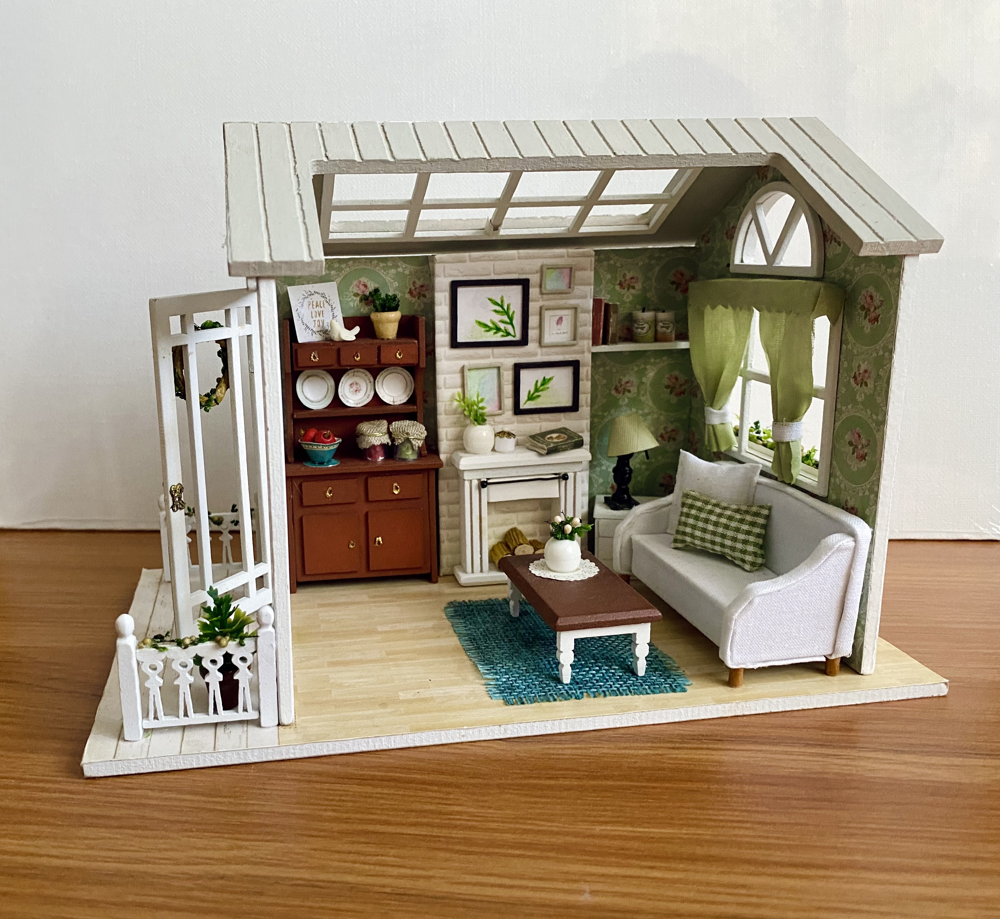
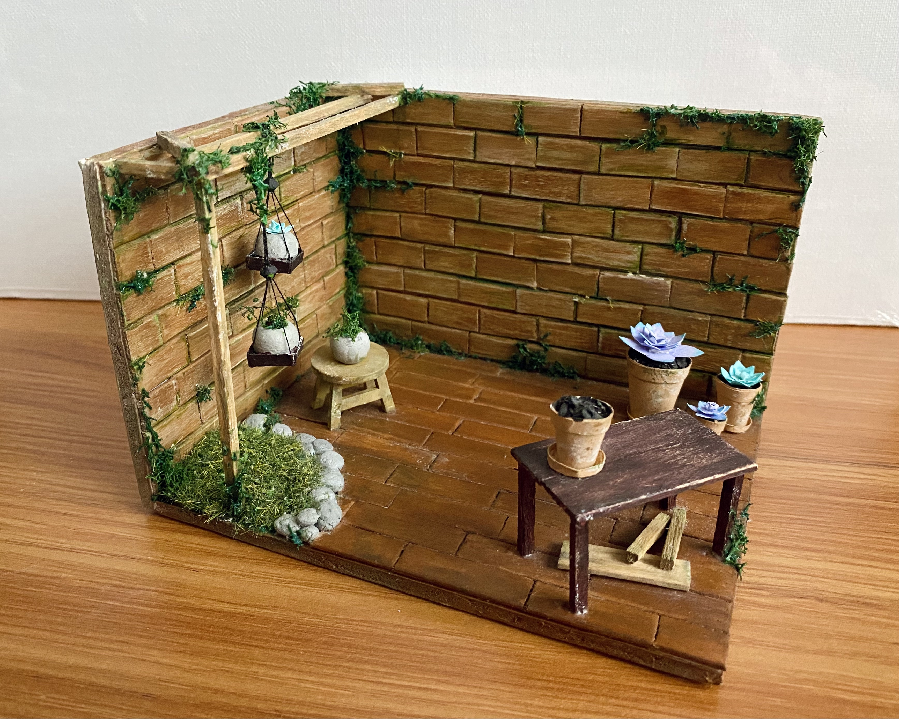
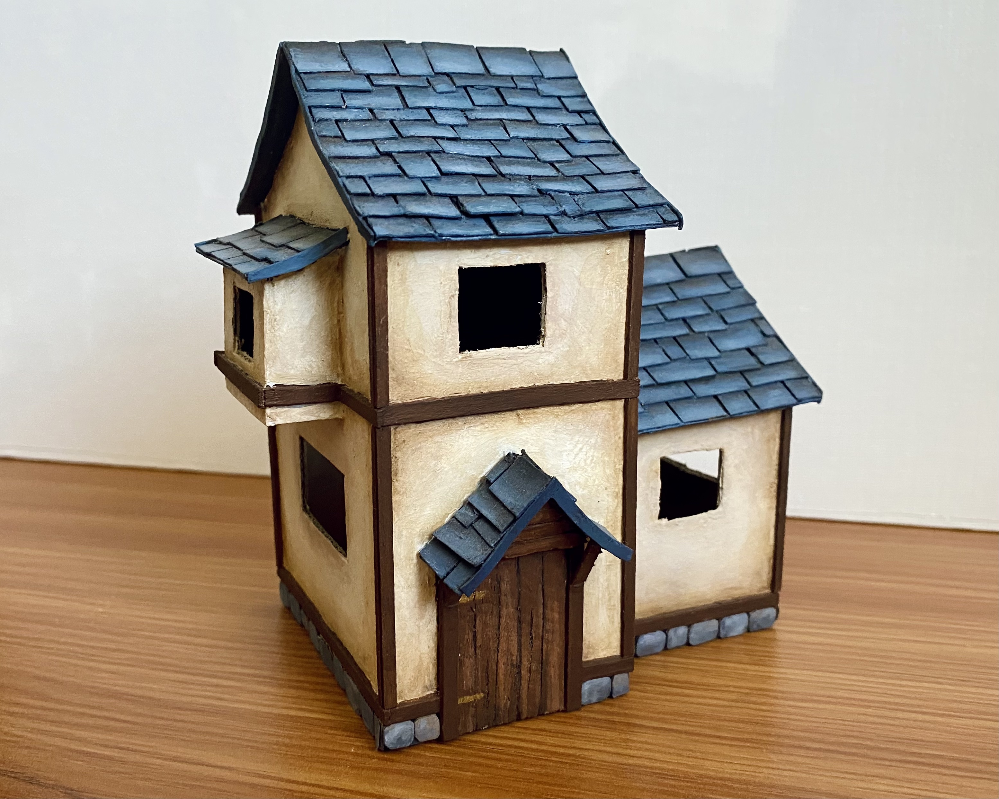

Cozy Living Room
A miniature dollhouse kit, one of the first ones I've ever assembled.
Gardening Workspace
A personal design that required the cutting of many popsicle sticks.
Medieval Cottage
A personal (unfinished) design inspired by medieval times.